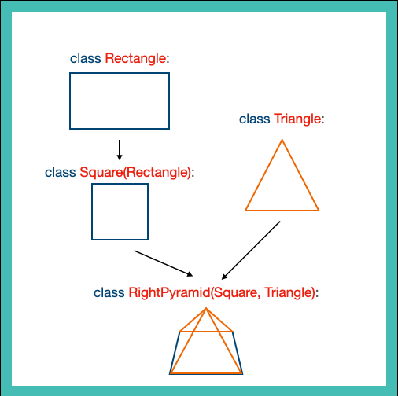
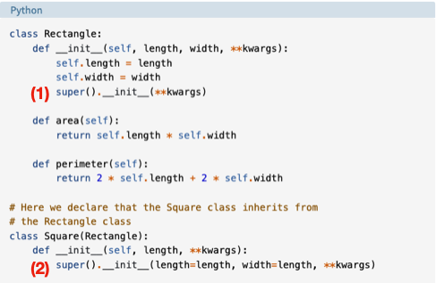
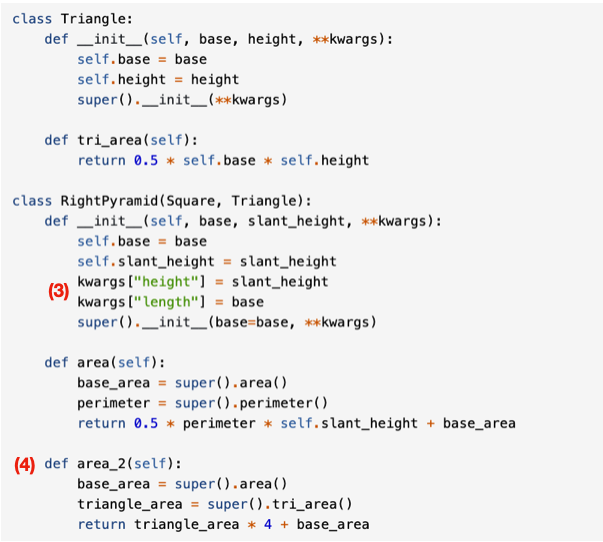

Super Python: super() a superclass method in python
python
super()
Author
Yao-Chung Chen
Published
January 1, 2023
When I was reading the tutorials on PyTorch, I encounter a function called super() in python:
To advance my python knowledge, I decided to dig into what super() did in this line. Then I found a really great article on Real Python described the use of suepr() in python. It uses similar geometry shapes to demonstrate how to use super() for object inheritance in python.
In this article, I will write down some notes and summarize some key points.
First we look at the figure below as an example:

There are 4 classes of python object. Square object inherit from Rectangle, RightPyramid inherit from Square and Triangle. To avoid repeat code and boundless parameters/arguments in a single class, we can use super(). It also help us to maintain our code. super() function is used to give access to methods and properties of a parent or sibling class. It also returns an object that represents the parent class. (W3School)

source: Real Python, https://realpython.com/python-super/
(1) This part is to provide for inheritance object to get its parameters, length, width and **kwargs.
(2) Square class inherit from Rectangle, so you will need to use super() in the instance declaration.

source: Real Python, https://realpython.com/python-super/
(3) Since previously we have set **kwargs for flexible multiple inheritance, we can access them in a key-value pairs. The RightPyramid class inherit the height from Triangle, and inherit base from Sqaure.
Danger
I think the last line in this part should be super( ).__init__(base=base, slant_height=height, **kwargs)
(4) I want to point out that different shape has their formula calculating area. You should try to avoid same function name and this will help you maintain your code when your project grows larger.
One more other thing is MRO. __mro__ stands for Method Resolution Order (MRO). MRO sets the rule for how a class track back to their inherit object class. The order of classes in the parenthesis can be changed to fit your MRO need.
class Rectangle:def__init__(self, length, width, **kwargs):self.length = lengthself.width = widthsuper().__init__(**kwargs)class Square(Rectangle):def__init__(self, length, **kwargs):super().__init__(length = length, width=length, **kwargs)class Triangle:def__init__(self, base, height):self.base = baseself.height = heightsuper().__init__(**kwargs)# first track Square and then Triangle class RightPyramid_1(Square, Triangle):def__init__(self):self.base = base# first track Triangle and then Squareclass RightPyramid_2(Triangle, Square):def__init__(self):self.base = baseprint(RightPyramid_1.__mro__)print(RightPyramid_2.__mro__)
As the above example shows, RightPyramid_1 and RightPyramid_2 both inherit Square and Triangle class but in different order. You can see if you print their mro ( using __mro__ ), it shows different orders. This sometime will cause problem if you are not using **kwargs.